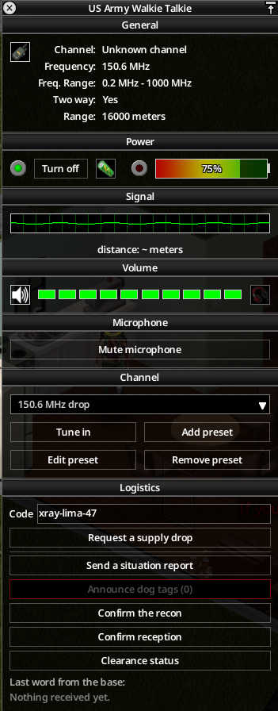
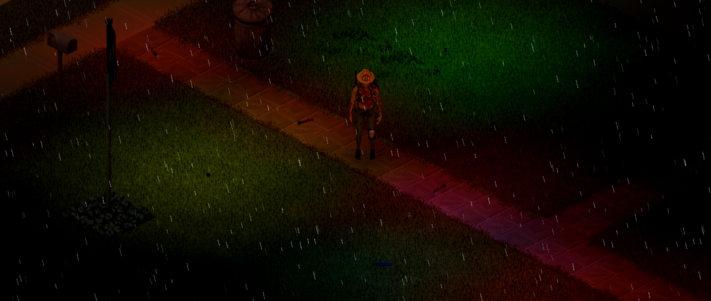

La conversation continue
Historique par contact, réponses contextualisées et paroles entendues. Le module « Émettre » prévu dans la fenêtre radio complète le carnet.

DES VOIX. DES VISAGES. DES CONSÉQUENCES.
Rencontrer des survivants qui se souviennent. Négocier une trêve. Tenir une promesse. Et laisser une histoire dans un monde qui tombe en ruine.
De vraies captures de Project Zomboid, avec MilitaryDrop et Signal Smoke, illustrent le projet. Les dialogues, noms et panneaux RadioSurvivor sont des maquettes interactives : leur gameplay reste à développer.
RadioSurvivor ajoute une vie sociale au chaos : des conversations contextualisées, des personnalités distinctes et des engagements que l’on peut comprendre. Le LLM choisit des intentions autorisées ; le serveur vérifie et garde un état commun à tous les joueurs.
Six voix imaginées pour le réseau radio. Chacune possède un ton, des horaires, des connaissances et des actions autorisées. Walt est déjà au cœur du prototype.
« Si tu m’entends, baisse la lumière. Et raconte-moi ce qui se passe chez toi. »
Conseils, nouvelles du dehors et relais vers les autres contacts.
Historique par contact, réponses contextualisées et paroles entendues. Le module « Émettre » prévu dans la fenêtre radio complète le carnet.
Un PNJ peut vous interpeller sur un événement pertinent, selon sa personnalité. La fréquence des sollicitations est limitée.
Les PNJ échangent leurs observations à portée de voix ou par radio. Vous pouvez entendre et intervenir. Aucun système de rumeurs.
Chaque PNJ apparu via Bandits! reçoit une personnalité immédiate côté serveur, enrichie ensuite par le LLM. Amical, hostile, chef ou simple membre : chacun compte.

Soigneuse · préfère convaincre avant de menacer
« On n’a pas besoin de héros.
On a besoin de gens qui reviennent. »
Explorez trois situations illustratives. Les réactions exactes restent liées à la personnalité et au contexte.
Mara vous écoute, sans vous ouvrir toutes les portes. Votre réputation peut orienter son premier jugement, mais ne remplace pas votre relation personnelle.
« Pose ton sac. Dis-moi ce que tu cherches. »
Chaque PNJ peut apprécier un joueur et en craindre un autre. La confiance est affichée par niveaux et tendance, distincte de la réputation globale.
Le chef prend les décisions collectives. Un membre peut contester, refuser ou partir sur décision du LLM validée par le serveur.
Un départ de bande conserve l’identité, la mémoire, les relations et les trêves déjà applicables au PNJ.
Un bouton « Carnet » dans la barre latérale du jeu. Contacts, missions et réputation : une liste à gauche, le détail à droite. Essayez les onglets et les notes.
Pragmatique, protectrice. Se souvient de votre aide au refuge.
Notes privées de cette démonstration, enregistrées dans ce navigateur si disponible.
Livrer six pansements propres. Bandages propres et bandes de tissu propres acceptés, une pièce pour une unité.
Votre réputation progresse par les actes et les missions. Elle ne remonte pas simplement parce que le temps passe.
Un nouveau personnage commence neutre. Une reconnexion conserve la réputation du même personnage.
La livraison est le premier type de mission détaillé. Seul ou en groupe, chaque joueur accepte personnellement. Une remise réelle fait avancer une progression commune.

Mara demande 6 pansements propres. Deux sont déjà livrés.
Démo : les objets ne proviennent d’aucun inventaire réel.
Le chrono démarre à la première acceptation. Les nouveaux participants partagent le temps restant ; une livraison partielle ne ferme pas les inscriptions.
La liste des objets acceptés est visible. Les remises partielles s’additionnent. Les fournitures livrées restent au PNJ en cas d’échec ou d’abandon.
Même gain de réputation pour tous à la réussite ; même malus à l’échec ou à l’abandon. Aucun bonus pour une remise partielle ni calcul d’effort.
Récompense matérielle facultative et annoncée. Un participant retire le lot une seule fois ; le carnet indique qui. Le partage est libre.
Le chrono avance en temps réel tant que le serveur fonctionne, même vide ou avec sa simulation en pause. Seul un arrêt du serveur le suspend.
Les relations personnelles coexistent avec des accords de faction explicites. Le propriétaire et ses négociateurs désignés parlent au nom du groupe.
Propriétaire & négociateurs désignés
Chef, membres et décisions individuelles
Une trêve collective n’oblige pas chaque PNJ à vous apprécier. Les liens personnels continuent d’évoluer.
Les fonctionnalités du carnet radio initial complètent le volet Bandits!. Elles restent des projets distincts, avec leurs propres règles.
Un passeur pour tout le serveur, un passage par semaine de jeu. Négociation à la radio, stocks et prix contrôlés, rendez-vous nocturne et échange sans contact sur la berge.
Argent et bijoux, images, papiers des morts, matériel militaire contre piles, médicaments, graines, consommables, pièces radio et nouvelles du dehors. Signal Smoke peut faciliter le rendez-vous.
Un groupe à secourir par équipe, des indices à la radio, des réserves et un vrai bâtiment. Dans ce scénario radio initial, les réserves baissent seulement si au moins un joueur est connecté ; c’est une règle distincte du chrono des livraisons Bandits!.
À temps : cache, note et départ des survivants, qui restent des voix du réseau. Trop tard : une scène et leurs dernières pages. Les incarner ensuite comme PNJ Bandits! est une évolution encore à discuter.
Le chroniqueur raconte les événements confirmés du serveur : missions, secours, passages et changements du monde. Le mémorial nomme les morts, sans révéler les positions exactes des bases.
Un journal sur le corps du personnage, fondé sur sa vie enregistrée. Prévu par défaut, désactivable par l’administrateur. Une trace à retrouver et à lire.
Un inventaire des fonctionnalités, des intégrations et des points encore ouverts. Filtrez puis ouvrez une fiche pour lire ses règles.
Aucune fiche ne correspond à cette recherche.
CharacterReputation prépare un moteur indépendant avec une API ouverte aux autres mods. La réputation globale du personnage reste unique ; la confiance de station MilitaryDrop reste un profil séparé.
Missions et incidents envers les PNJ contribuent à la réputation globale. La confiance de chaque PNJ reste dans RadioSurvivor.
Identités persistantes, événements, historique, API versionnée et autorité serveur : architecture prévue. La coquille existe, les capacités métier restent à implémenter.
MilitaryDrop garde sa confiance de station et ses règles militaires. D’autres mods pourront consulter et contribuer via des adaptateurs documentés.
Cette page présente une vision fonctionnelle. Elle ne constitue pas une preuve de compatibilité ou de test en jeu de l’intégration Bandits!.
Dialogue texte via un pont Python. Un essai solo est rapporté dans le carnet initial ; cela ne valide pas l’ensemble du projet en multijoueur.
Personnalités, relations, accords, réputation et règles de livraison décrites dans les spécifications. Aucun gameplay Bandits! de cette page n’est encore implémenté.
Structure 42.21 et descripteur disponibles. Le moteur, la persistance, l’API métier et la migration MilitaryDrop restent à réaliser.